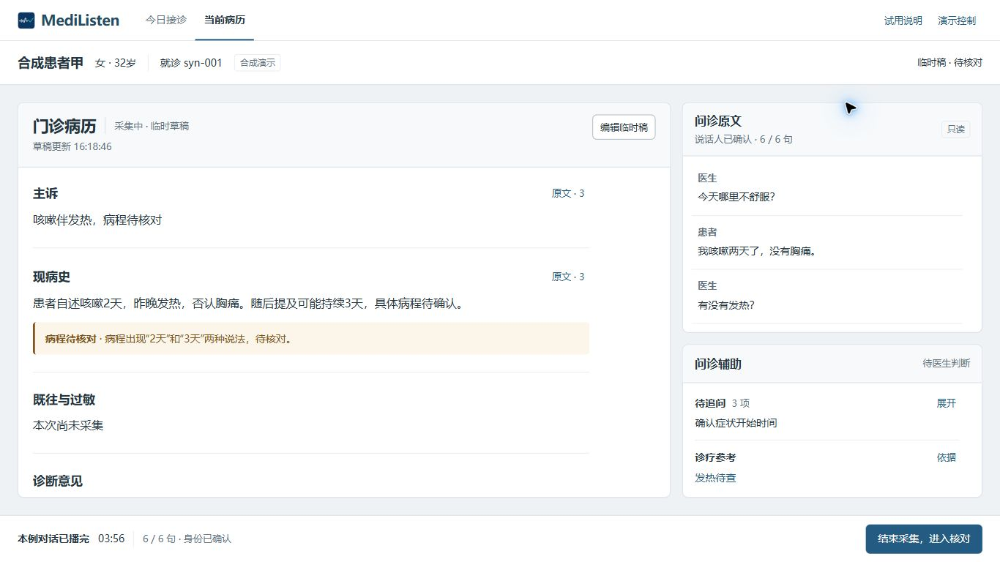
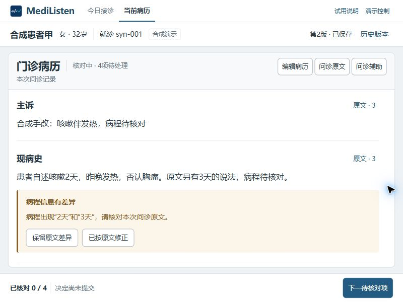

对照条件
合成患者甲 / syn-001 · 6 / 6 句 · 说话人已确认 · 暂停 · 未手改临时稿 · CSS 1366 × 768 · 截图 1366 × 768 · DPR 1。采用相同视口模拟条件；时间戳、播放耗时不参与视觉判断。浏览器真实缩放单独验收。
旧版 · B 持续对照
原文与辅助共用右侧区域，参考入口重复 · 查看原尺寸新版 · 三块独立工作面板
灰底分区，文书、原话、辅助各有边界与工具归属 · 查看原尺寸
我的判断：结构改善成立，阅读收益有取舍
新版不再要求先读完标题才知道区域归属。主文书获得最大完整表面，编辑动作归于文书，辅助退出原文流；追问和诊疗参考同时露出，底部只突出当前主要动作。
代价也明确：原文首屏由约五句减少到约三句，核对病程差异仍需定位或滚动。新增面板并不自动等于更高效率；更好的空间比例仍须结合医生使用判断。短病例也仍有留白，不能把“分区清晰”直接称为最终审美通过。
窄屏 · CSS 800 × 600
只保留连续病历；原文和辅助通过明确按钮进入面板。正文可滚动高度约353px，患者、保存状态和主操作保持可见。

导出回执 · 修正前与修正后
同一合成患者甲、版本2、800×600。先前纵向排列使文件名接近底部；两列信息布局后，身份、版本、时间、文件名和下载状态均在首屏。前图为下载前，后图为已发起下载并完成接诊，状态差异明确保留。
修正前：信息纵向过长修正后：关键信息首屏可辨
本页展示真实页面截图，不是生成效果图。原型使用合成内容；用户视觉确认、目标医生独立试用、真实音频和生产PDF验收另行记录。